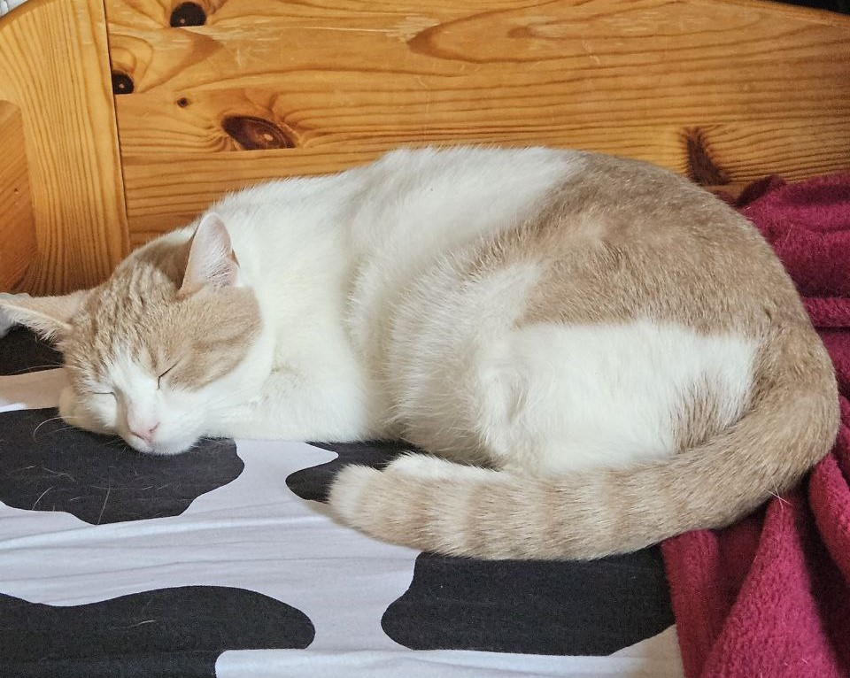

Место учебы
Фундаментальная и компьютерная лингвистика, НИУ ВШЭ, Москва
Человек, умеющий создавать HTML
Фундаментальная и компьютерная лингвистика, НИУ ВШЭ, Москва
Нахабино
Нахабинская гимназия №4
Учусь лингвистике, планирую быть лингвистом, по ночам мне тоже снится лингвистика. Да и просто хороший человек. Надеюсь. Может показаться, что я злой, но на самом деле я добрый и открытый.
Как заинтересовался лингвистикой - не помню. Вроде просто любил читать про это в Википедии, потом перешел на книжки. Первого живого лингвиста увидел когда мне было 17 лет. А теперь просто хочу понять побольше про этот мир, и это навязчивое желание меня не отпускает.
Что меня точно не интересует - филология и прочие культурные вещи. Я считаю, что лингвистика это естественная наука и должна соответствовать своему статусу. Именно поэтому обладаю неприятной привычкой выписывать разных людей из лингвистов.
У меня есть кот. Зовут Шурик. Посмотрите на него:
Единственное что с воображением проблемы. Именно поэтому тут так мало написано. Да и нарисовано тоже.